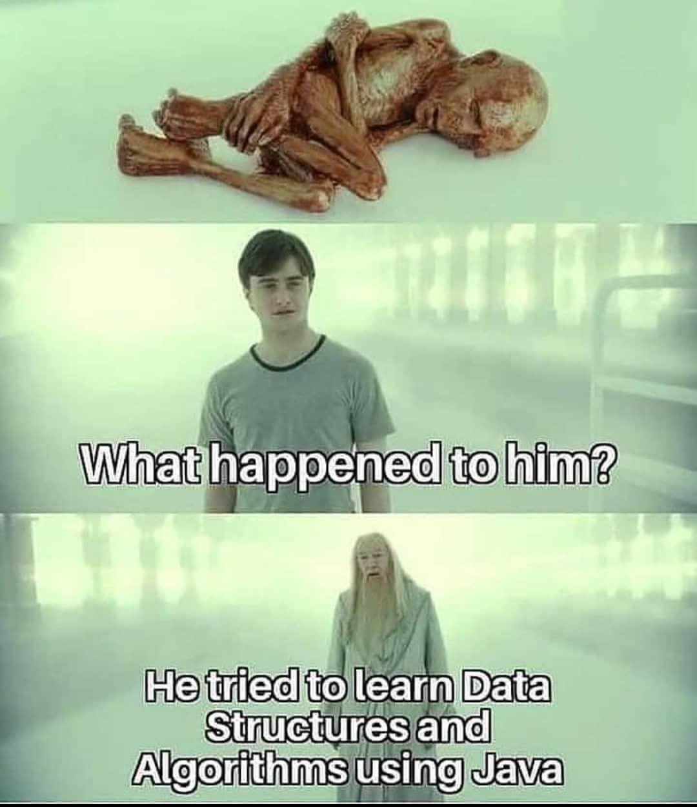
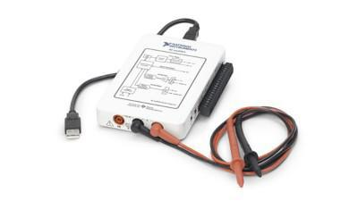
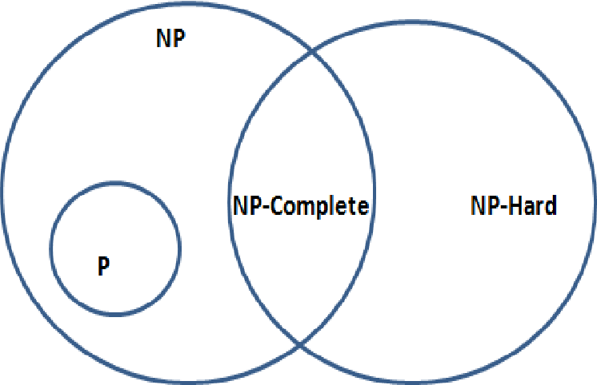

Throughout my academic journey, I have taken a number of challenging and enriching courses that have shaped my skills in engineering, software development, and system design. Below is a curated list of coursework that has equipped me with both foundational and advanced knowledge essential for tackling real-world hardware & software problems, especially those found in the semiconductor industry.

VLSI & Advanced Digital Design
Covers CMOS VLSI design and fabrication fundamentals, including transistor-level logic, CMOS gate layout, and delay optimization through gate sizing. Introduces SPICE simulation for analyzing power and timing, fault testing, interconnect delays, and datapath design. Also explores system-level topics like floorplanning and power distribution.
Architecture, Systems, Concurrency and Energy in Computation
Explores computer architecture and operating systems fundamentals, including pipelined datapaths, instruction scheduling, and hazard handling. Covers memory hierarchy concepts like caches, virtual memory, and TLBs, along with I/O mechanisms such as DMA and interrupts. Introduces parallelism (ILP, TLP, DLP) and includes performance and energy analysis of datapaths and memory systems.
Physical Foundations of Computer Engineering
Introduces the fundamentals of digital device performance, including speed and energy analysis of logic elements. Covers noise limits in digital systems, computational models like FSMs and Turing machines, and the design of digital circuits using CMOS and alternative technologies with emphasis on speed, energy, and reliability trade-offs.

Programming Hardware/Software Systems
Exploration of hardware-software interaction through instruction set architecture, memory management, and I/O systems to optimize performance metrics including instruction count and register usage. Engineered efficient algorithms in C, C++ using VScode and MIPS Assembly with MiSaSiM, enhancing coding proficiency in both low and high level languages. Acquired practical experience in embedded systems and real-time debugging while working with the Mbed ARM 32-bit microcontroller.
Introduction to Signal Processing
Covers core concepts in signal processing, including time- and frequency-domain analysis using Fourier and z-transforms. Focuses on expressing systems mathematically, analyzing system behavior, and implementing digital filters and sampling operations in MATLAB. Explores real-world applications such as audio and image processing.
Digital Design Laboratory
Gained hands-on experience in digital system design through the implementation of combinational and sequential circuits. Utilized VHDL to design, simulate, and debug digital logic systems on FPGA hardware. Applied concepts in finite state machines, timing analysis, and circuit optimization. Developed skills in problem-solving, hardware troubleshooting, and team collaboration to complete lab-based projects.

Data Structures and Algorithms
Comprehensive study of the design and implementation of fundamental data structures, including lists, maps, trees and graphs, as well as algorithms such as sorting, searching and dynamic programming. Defined solutions to real-world software problems using Java within the IntelliJ IDE, analyzing time and space complexity to evaluate algorithm efficiency.

Circuit Analysis
Studied RLC circuits and applied network analysis techniques such as node and loop analysis to large-scale linear systems. Utilized Thevenin and Norton theorems for maximum power transfer, along with superposition, phasor analysis, and Laplace transforms for AC and steady-state analysis. Examined operational amplifier circuits, analyzed frequency response, and constructed Bode plots for first- and second-order systems. Reinforced these concepts using MyDAQ university kit and LabVIEW

Design and Analysis of Algorithms
Developed expertise in algorithm design and complexity analysis, including divide-and-conquer, dynamic programming, greedy algorithms, and graph-based techniques. Conducted rigorous evaluations of algorithm efficiency using proof techniques. Explored NP-completeness and approximation algorithms. Applied problem-solving skills to design optimized solutions for real-world computational challenges.
Objects and Design
Project-based course based on the Agile software methodology for managing large-scale software projects. Built full-stack Django web applications using Python, HTML, JavaScript, and CSS that incorporated external APIs such as GMaps and Spotify, developing dynamic user interfaces and integrated backend functionality with databases to handle user authentication and data manipulation. Gained experience in implementing RESTful APIs, creating user models and handling form submissions.
Digital System Design
Detailed examination of computer system and digital design principles, encompassing key topics such as semiconductor physics, switch and gate design, Boolean algebra, storage elements, datapath, and memory organization. Reinforced these concepts while wiring complex finite-state machine circuits and testing them using the myDAQ university kit and LabVIEW.